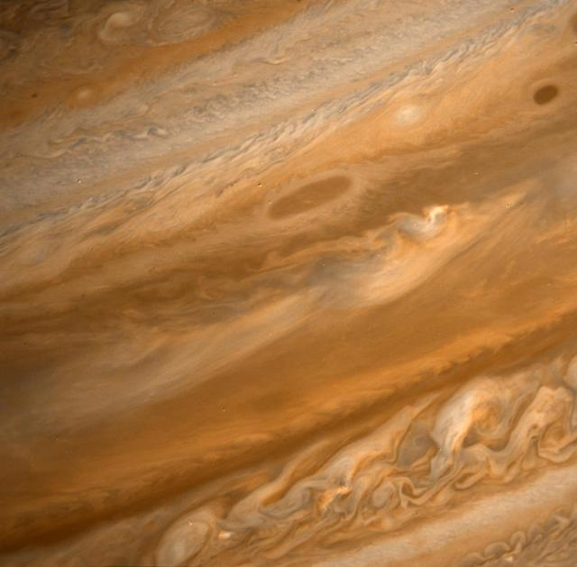
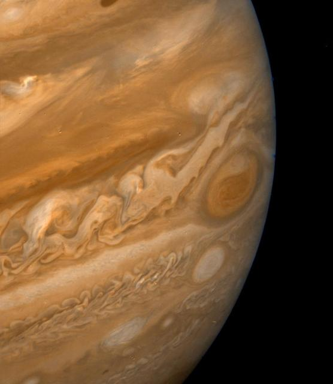

Jupiter
Jupiter is the largest planet in the solar system. Its bands are clouds at different heights, and the Great Red Spot is a huge storm.
Type
Gas giant
Storm
Great Red Spot
Fun Fact
Massive magnetic field
Jupiter is the largest planet in the solar system. Its bands are clouds at different heights, and the Great Red Spot is a huge storm.
Gas giant
Great Red Spot
Massive magnetic field
NASA IMAGE ARCHIVE


More than 1,300 Earths could fit inside Jupiter. It is made mostly of hydrogen and helium, and its strong magnetic field produces bright auroras.
The animation rotates the planet illustration; it is not a simulation of the Great Red Spot or a time-scaled model.
Jupiter rotates once in about 9.9 hours. Start a simple, non-time-scaled rotation illustration.